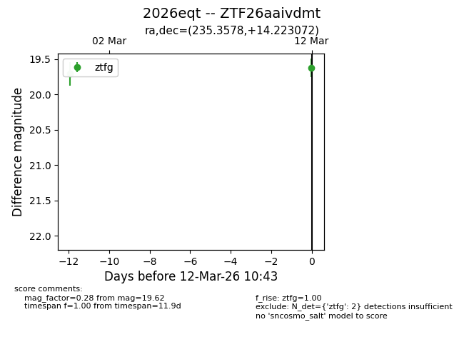
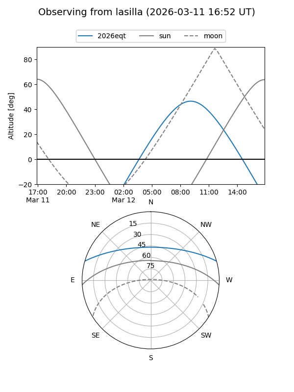
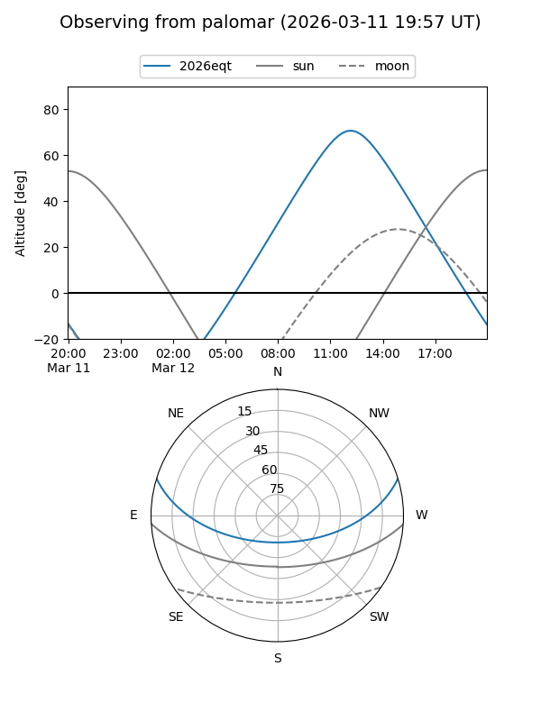
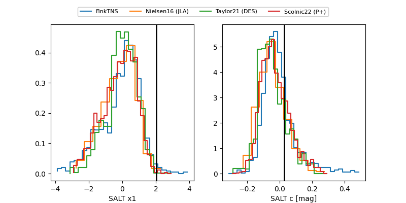

2026eqt
Target 2026eqt at 2026-03-12 10:46
Aliases and brokers:
FINK: link
Lasair: link
ALeRCE: link
TNS: link
YSE: link
alt names
ZTF26aaivdmt (ztf,fink_ztf)
2026eqt (tns,yse)
Coordinates:
equatorial (ra, dec) = 235.3578,+14.22307
equatorial (HMS+DMS) = 15:41:25.88,+14:13:23.06
galactic (l, b) = (23.6333,+48.42650)
Flags:
Photometry:
last ztfg=19.62
2 ztfg detections
Lightcurve

Visibility


Additional plots
